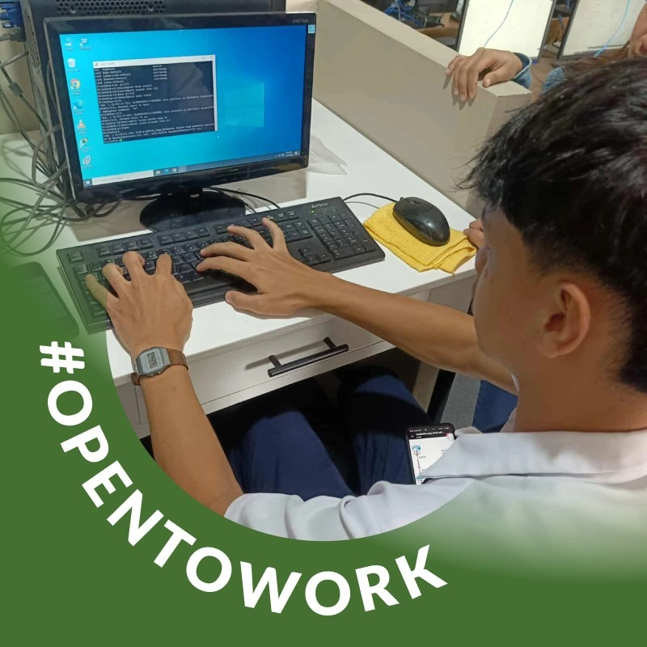

A passionate 4th year IT student at Bukidnon State University with hands-on experience in networking, system diagnostics, and technical support. Ready to bring energy and dedication to real-world IT challenges.

I'm Steven Joe Bautista, a 4th year Bachelor of Science in Information Technology student at Bukidnon State University, Malaybalay City, Bukidnon. I'm passionate about technology, problem-solving, and building practical IT solutions.
Throughout my academic journey, I've developed strong competencies in network configuration, hardware diagnostics, technical support, and collaborative system development. I thrive in team environments and am always eager to learn new technologies.
{
"name": "Steven Joe Bautista",
"role": "IT Student & OJT Candidate",
"university": "Bukidnon State University",
"year": 4,
"interests": [
"Networking",
"System Administration",
"Technical Support",
"Problem Solving"
],
"available": true
}Experienced in configuring LANs, network switches, routers, and resolving IP configuration errors and connectivity issues.
Hands-on experience in hardware maintenance, component diagnostics, OS installation, and software troubleshooting.
Skilled in providing end-user assistance, resolving technical queries, and ensuring smooth system operations.
Proficient in diagnosing connectivity issues, resolving network bottlenecks, and maintaining stable network performance.
Strong team player with leadership experience in academic projects, capable of coordinating tasks and driving results.
Analytical mindset with the ability to break down complex technical problems and develop effective solutions.
Currently in my 4th year, gaining comprehensive knowledge in IT fundamentals, networking, system administration, software development, and capstone project development.
Feel free to reach out for collaborations, OJT opportunities, or just a friendly hello!